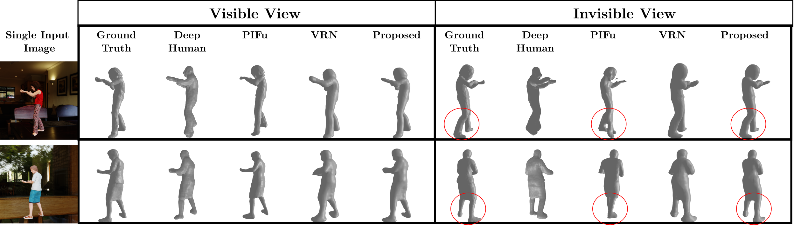
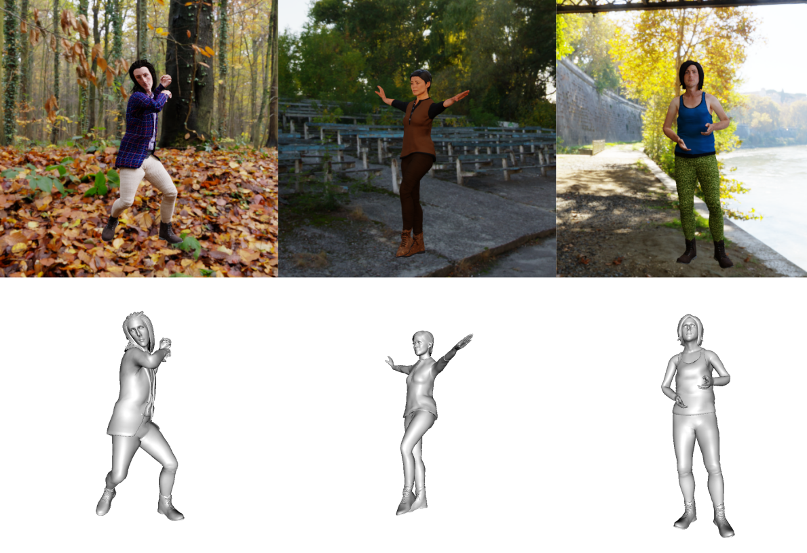

Multi-View Consistency Loss for Improved
Single-Image 3D Reconstruction of Clothed People
Center for Vision, Speech and Signal Processing, University of Surrey, UK1
Vicon Motion Systems LTD, UK2
|

|
We introduce a novel method for single image human reconstruction,
trained with multi-view 3D consistency on a new synthetic 3DVH dataset of
realistic clothed people with a wide range of variation in clothing, hair, body
shape, pose and viewpoint.
|
We present a novel method to improve the accuracy of the 3D reconstruction of clothed human shape from a single image. Recent
work has introduced volumetric, implicit and model-based shape learningframeworks for reconstruction of objects and people from one or more
images. However, the accuracy and completeness for reconstruction of
clothed people is limited due to the large variation in shape resulting
from clothing, hair, body size, pose and camera viewpoint. This paper
introduces two advances to overcome this limitation: firstly a new synthetic dataset of realistic clothed people, 3DVH ; and secondly, a novel
multiple-view loss function for training of monocular volumetric shape
estimation, which is demonstrated to significantly improve generalisation and reconstruction accuracy. The 3DVH dataset of realistic clothed
3D human models rendered with diverse natural backgrounds is demonstrated to allows transfer to reconstruction from real images of people.
Comprehensive comparative performance evaluation on both synthetic
and real images of people demonstrates that the proposed method significantly outperforms the previous state-of-the-art learning-based single image 3D human shape estimation approaches achieving significant
improvement of reconstruction accuracy, completeness, and quality. An
ablation study shows that this is due to both the proposed multiple-view
training and the new 3DVH dataset.
Paper
|  |
A. Caliskan, A. Mustafa, E. Imre, A. Hilton.
Multi-View Consistency Loss for Improved Single-Image
3D Reconstruction of Clothed People
2020 Asian Conference on Computer Vision (ACCV).
[pdf]
[Bibtex]
|
Code and Dataset